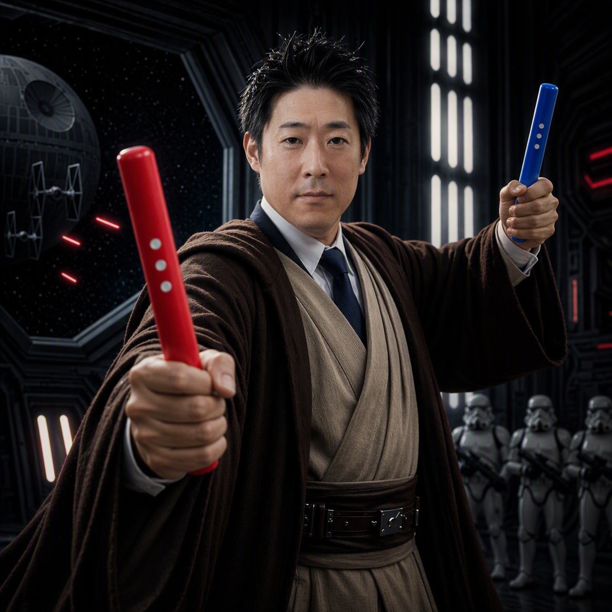

🀄 麻雀 点数計算
あなたの手牌
0 / 14 枚
牌を選んでタップ

あがりの状況
あがり方
ツモ
ロン
リーチ
一発
嶺上開花（カン後のツモあがり）
槍槓（他家のカンをロン）
海底摸月（最後の1枚をツモ）
河底撈魚（最後の1枚をロン）
場風
東
南
自風
東
南
西
北
あがり牌
ドラ
本場
（ロン+300点/本場・ツモ+100点/本場・人）
鳴き（ポン・チー）
ポン（明刻・同じ牌3枚）
チー（明順・選んだ牌から3連番）
鳴き追加
カン（槓）
暗槓（自分で4枚そろえた）
明槓（鳴いた / 加槓）
カン追加
全部消す
待ちを調べる
点数計算